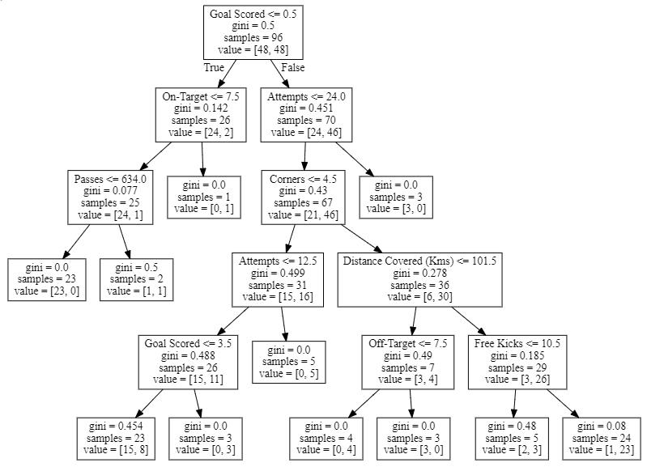
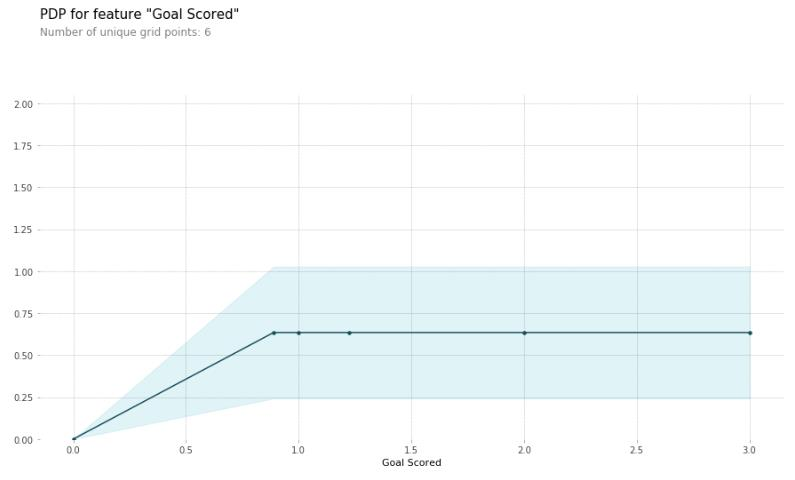
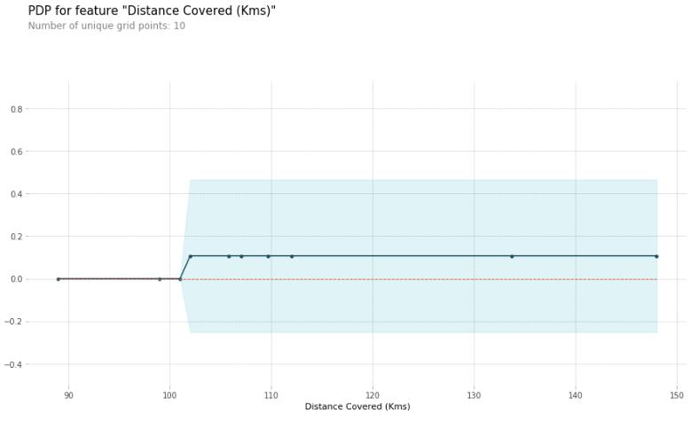
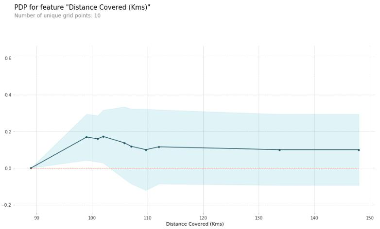
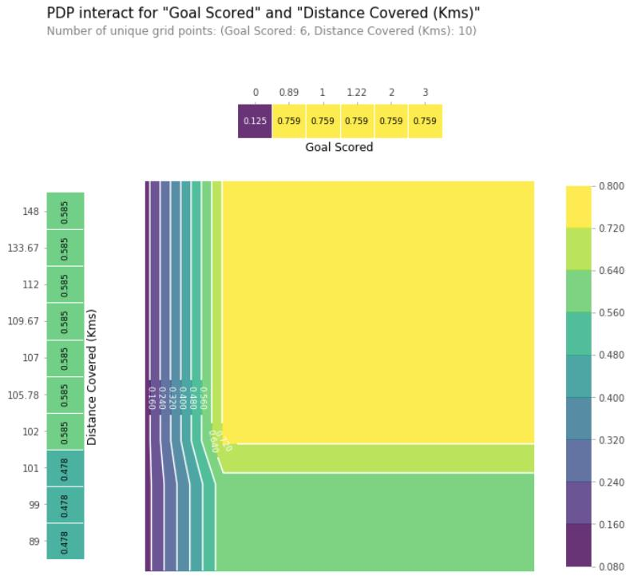

这是第三节：Partial Dependence Plots
特征重要性展示的是哪些变量对预测的影响最大，而部分依赖图展示的是特征如何影响模型预测的。
可以用部分依赖图回答一些与下面这些类似的问题：
- 假如保持其它所有的特征不变，经纬度对房价有什么影响？换句话说，相同大小的房子，在不同的地方价格会有什么差别？
- 在两组不同的人群上，模型预测出的健康水平差异是由他们的负债水平引起的，还是另有原因？
如果你对线性回归或逻辑回归比较熟悉的话，部分依赖图起到的效果跟这些模型里面的参数差不多。但是，与简单模型中的参数相比，复杂模型上的依赖图可以捕捉到更复杂的模式。
工作原理
跟排列重要性一样，部分依赖图也是要在拟合出模型之后才能进行计算。 模型是在真实的未加修改的真实数据上进行拟合的。
以足球比赛为例，球队间可能在很多方面都存在着不同。比如传球次数，射门次数，得分数等等。乍看上去，似乎很难梳理出这些特征产生的影响。
为了搞清楚部分依赖图是怎样把每个特征的影响分离出来的，首先我们只看一行数据。比如，这行数据显示的可能是一支占有50%的控球时间，传了100次球，射门了10次，得了1分的球队。
接下来，利用训练好的模型和上面的这一行数据去预测该队斩获最佳球员的概率。但是，我们会多次改变某一特征的数值，从而产生一系列预测结果。比如我们会在把控球时间设成40%的时候，得到一个预测结果，设成50%的时候，得到一个预测结果，设成60%的时候，也得到一个结果，以此类推。以从小到大设定的控球时间为横坐标，以相应的预测输出为纵坐标，我们可以把实验的结果画出来。
代码示例
在这里，重点不是建模过程，所以在下面的代码中，不会有过多数据探索和建模的内容。
训练模型
1 | import numpy as np |
为了节省解释的时间，第一个例子用决策树，如下所示。在实际应用中，你可能会用到更复杂的模型。
决策树结构可视化
1 | from sklearn import tree |

怎么理解得到的决策树：
- 非叶子节点顶部的数值表示分支标准
- 节点最底部的一对数字表示当前节点上正负类样本的数目
可以用PDPBox库来生成部分依赖图。示例如下：
1 | from matplotlib import pyplot as plt |

在看上面的部分依赖图的时候，有两点值得注意的地方：
- y轴表示的是模型预测相较于基线值或最左边的值的变化。
- 蓝色阴影部分表示置信区间。
从这幅图可以看出，进一个球会显著地增加获得最佳球员称号地机会，但是进更多的球似乎对预测的影响不大。
下面是另外一个示例图：
1 | feature_to_plot = 'Distance Covered (Kms)' |

这种图似乎太简单了，并不能代表现实情况。其实这是因为模型太简单了。从上面的的决策树结构图可以看出，上面两幅部分依赖图展示的结果正是决策树的结构。
通过部分依赖图，可以比较轻松地比较不同模型的结构或含义。下面是一个随机森林的例子：
1 | # Build Random Forest model |

这个模型认为在比赛过程中，如果所有球员一共跑动了100km的话，球队会更有可能斩获最佳球员。但是跑动得更多的话，可能性就会下降一些。
一般来说，这条曲线的光滑形态看上去比决策树的阶跃函数更可信。但是因为例子中用的数据集太小了，所以在对任意一个模型进行解释的时候，要特别注意选用的方式。
2D 部分依赖图
如果你对特征之间的相互作用感兴趣的话，2D部分依赖图就能排得上用场了。举个例子看下。
仍然以决策树模型为例，下面会生成一个非常简单的图，但是你仍然能够把你从图中看出的东西跟决策树本身的结果匹配到一起。
1 | # Similar to previous PDP plot except we use pdp_interact instead of pdp_isolate and pdp_interact_plot instead of pdp_isolate_plot |

上面这幅图展示了在Goals Scored和Distance coverd两个特征的任意组合上的预测结果。
比如，当一个球队得了至少一分，并且跑通的总距离接近100km的时候，模型预测的结果最高。如果得了0分，跑动的距离就没什么用了。你能从决策树中看出这一结果吗？
但是如果球队得分了的话，跑动的距离是会影响到预测的。确定你可以从2D的部分依赖图中看出这一个结果。你能从决策树中看出同样的结果吗?